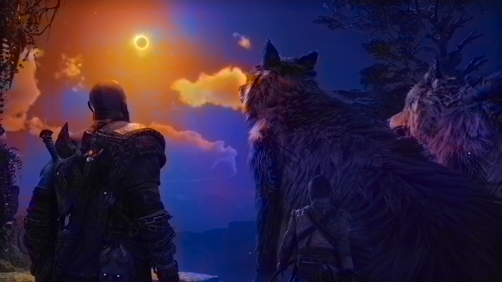
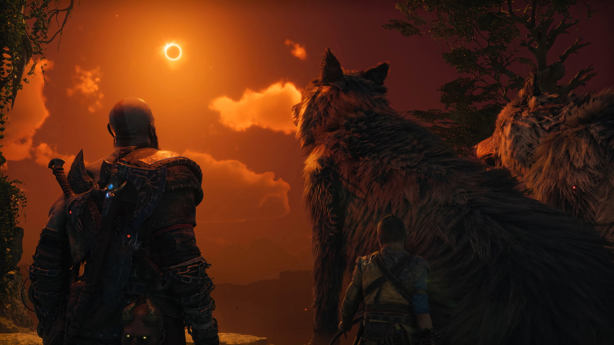

Revitalize Historical Black & White Imagery
Using deep convolutional neural networks in the CIE LAB color space, predicting chrominance channels (a, b) while preserving authentic grayscale luminance (L).
Interactive Before & After Comparison
Drag the central slider left or right to reveal the AI-colorized transformation



Test Your Own Image
Upload any grayscale photo to test intelligent client-side tone mapping
Supports JPG, PNG, WEBP (Max 10MB)
Colorized Result
ReadyNo Custom Image Processed
Upload a grayscale photo on the left or test our demo presets!
Under the Hood: Deep Learning Computer Vision Pipeline
How the OpenCV + Zhang et al. Caffe model achieves realistic chromatic hallucination
CIE LAB Color Space
Standard RGB mixes lightness with chromaticity. The model converts input images to CIE LAB, isolating the lightness channel (L) from color information (a, b) so original photo detail remains uncorrupted.
Quantized Color Prior
A 313-point cluster centroid model (pts_in_hull.npy) models the multimodal nature of natural object colors, avoiding sepia wash-out and producing vivid sky, grass, and flesh tones.
End-to-End Inference
Grayscale frames are resized to 224x224, fed through the feed-forward CNN to predict chrominance maps, upsampled with bilinear interpolation, merged back with high-res (L), and converted to RGB.